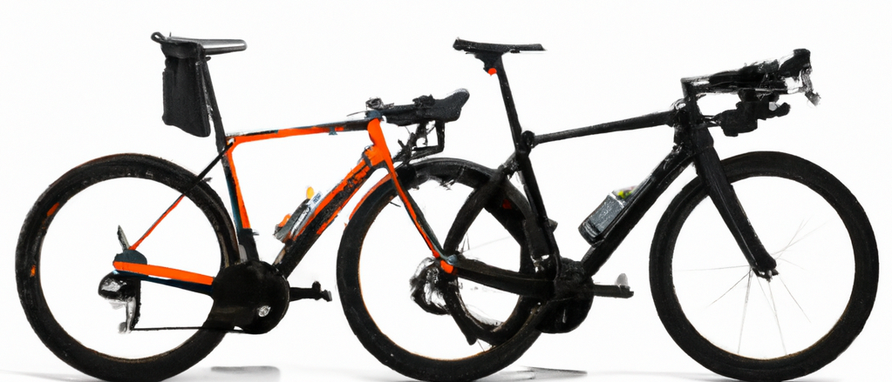
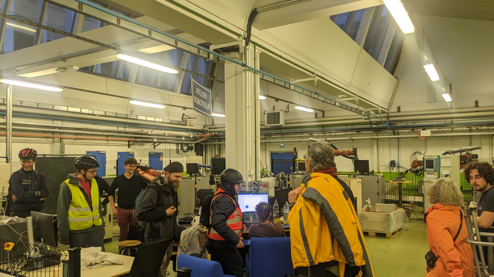

Le √tt
Découvrez le futur de la mobilité cycliste avec le √tt, bien plus qu'un simple vélo à assistance électrique.
Notre innovation réside dans sa capacité à fusionner, littéralement. Imaginez deux vélos se fondant en un seul, une symbiose de force et d'efficacité.
Avec le √tt, la fusion des deux roues arrière transforme votre expérience de cyclisme en une performance harmonieuse, où chaque pédalée unitaire représente l'alliance de deux énergies.
La modularité est au cœur de notre conception. Notre √tt s'adapte, se module, et se configure selon vos besoins. Avec sa structure adaptable, ce vélo s'ajuste à différentes tailles, offrant confort et praticité à chaque utilisateur.
Bienvenue dans une nouvelle ère du cyclisme, où la fusion devient votre force, la modularité votre liberté et l'adaptabilité votre norme. Découvrez le √tt : Redéfinissez votre trajet, fusionnez vos forces, explorez l'innovation.

Technologie et innovation

Notre innovation repose sur une technologie de fusion révolutionnaire, redéfinissant la façon dont les vélos sont assemblés. Chaque composant du VT.T a été conçu pour permettre une fusion ingénieuse, où la réunion des éléments crée une synergie inégalée.
La technologie de fusion employée dans la conception du VT.T offre une solidité accrue et une symbiose parfaite entre les parties assemblées. Cela permet non seulement une transformation fluide du vélo en un modèle fusionné, mais garantit également une expérience de conduite sans compromis, quelle que soit la configuration du vélo.
Expérience utilisateur et témoignages :
Découvrez ce que les cyclistes disent à propos du VT.T, partagez leurs expériences et commentaires positifs !
Témoignages :
"Une Révolution du Cyclisme !" - Metz à Vélo
L'association "Metz à Vélo" approuve pleinement le VT.T, offrant une expérience de cyclisme inégalée. Une dizaine de membres ont déjà adopté cette nouvelle approche du vélo et l'ont approuvée avec enthousiasme.
Partagez votre expérience :
Vous avez essayé le VT.T et souhaitez partager votre expérience ? Rejoignez la conversation ! Partagez vos témoignages et votre expérience avec le VT.T. Votre voix compte, contribuez à façonner l'avenir du cyclisme.

Qui sommes-nous
Nous sommes une équipe dynamique d'étudiants passionnés, réunis par une vision commune dans le cadre d'un défi intense de créativité : un hackathon de 24 heures organisé à l'IUT de Metz, Université de Lorraine. Unis par notre diversité de disciplines - Gestion des Entreprises et des Administrations (GEA), Informatique, Techniques de Commercialisation (Tech de Co), Mesures Physiques et Génie Mécanique et Productique (GMP) - nous avons combiné nos expertises variées pour donner vie au √tt.
Dans un délai serré, stimulés par la pression du temps et portés par notre passion collective pour l'innovation, nous avons uni nos forces pour repousser les limites du possible dans le monde du cyclisme. Animés par la volonté de créer un vélo qui transcende les normes conventionnelles, nous avons développé le √tt, un vélo à assistance électrique révolutionnaire, fusionnable et adaptable, conçu pour redéfinir la mobilité cycliste.
Notre diversité est notre atout, notre collaboration notre moteur. En 24 heures intenses, nous avons incarné la fusion des idées, des compétences et des ambitions pour façonner un avenir où la mobilité devient synonyme d'adaptabilité, d'efficacité et de durabilité. Bienvenue dans l'univers du √tt, fruit de notre passion et de notre détermination à innover pour vous offrir une expérience de cyclisme inégalée.